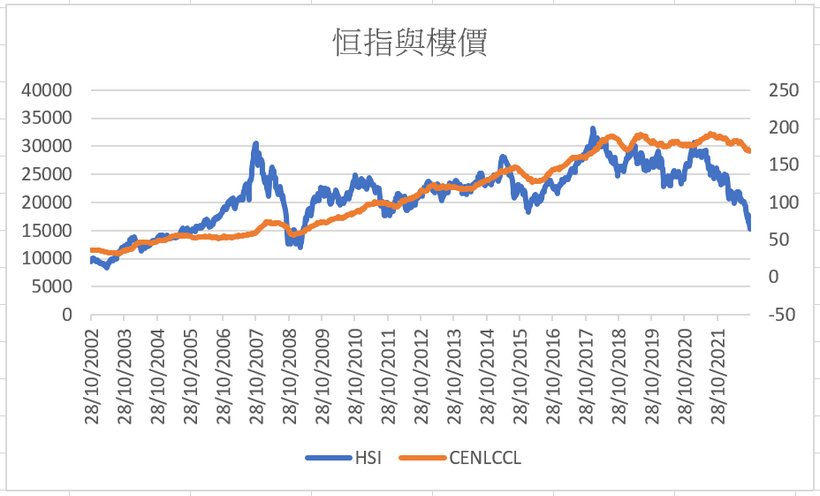
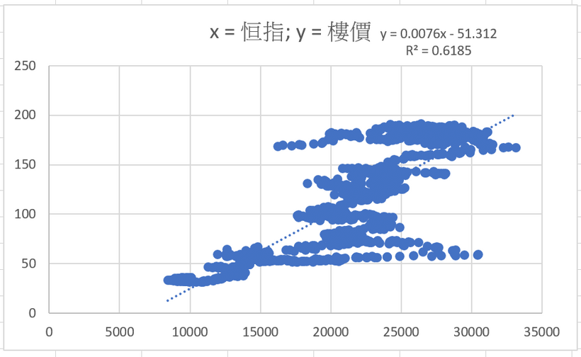
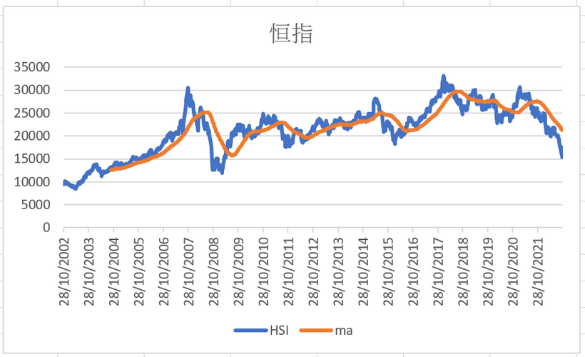
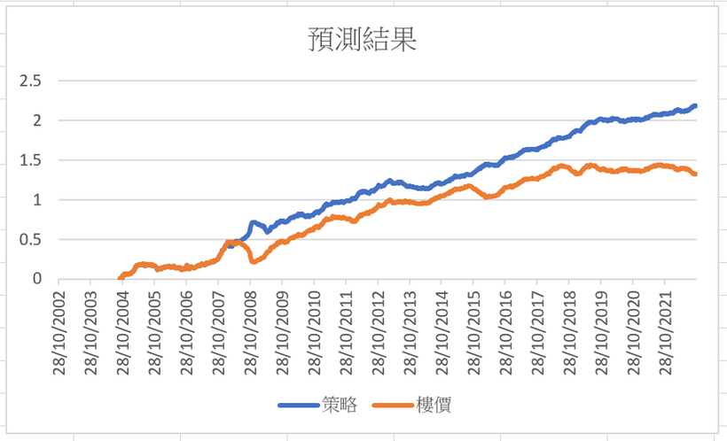

相信大家都知小弟自去年Q3開始就非常看淡樓價，過去都寫過了不同專欄，教大家如何預測樓價升跌，例如以M2做regression去看樓價超買超賣；又例如以地產股指數預測樓價；亦曾分享以領展股價（0823）預測，以上幾種方法都可以高命中率地預知升跌。新加入Patreon的朋友可以多留意舊文章，多看有益。
這次就來以恒指預測樓價，畢竟恒指跌了這麼多，對樓價有啟示嗎？
M2、地產股指數、領展皆與樓價高度相關，最能代表香港經濟及金融狀況的恒生指數，怎能不拿來試試呢？
在進行數據分析前，要先從經濟金融理論出發，去建構策略，否則容易犯下data snooping的問題，畢竟correlation doesn’t imply casuation。
恒指一來代表本地經濟，亦是投資者對經濟的預測；恒指下跌，即經濟不景。另一方面，如果恒指大跌，投資者身家縮水，能拿來買樓炒樓的資金便大大減少，因此hypothesis為，高成交額的恒指升，濟後的樓價會跟升；而恒指跌，樓價亦會跟跌。
OK，假想設定後，可以拿數據來分析了。在網上下載了中原樓價指數過去20年數據來看，即2002年至今的數據。
首先，在圖一，我把恒指與樓價plot在一起。看起來有相似的地方，但不完全相同，例如2007恒指爆升，樓價反應不大；2008恒指爆跌，樓價反應亦不大，但其他時間則較相似。

圖二，我把恒指及樓價形成點陣圖，看看兩者相關性。r^2為0.62，即相關系數達0.8，兩指數水平的相關性頗高。若看fittest line，恒指15000點時，樓價應為60。不過這太誇張了，樓價不大可能跌7成。事實上，即使相關，但error terms也大，例如2007年恒指30000，但樓價指數只是60。所以，直接scatter plot未必能準確預測樓價。

當然，我可以加入其他factor，就像2020-9-18那篇Patreon中所示範的分析方法。不過，這次分享另一個玩法 — 直接看著恒指分析。
圖三，我在恒指週線圖中加上一條50周移動平均線。

圖四，則是恒指減去50周移動平均線的殘差，或者可以說成是恒指與移動平均線的距離。這張圖的意義大了，藍線愈高，即樓價便宜；而藍線愈低，即樓價愈貴。

指標完成建構後，就可以搞策略了。策略可以是：當殘差為正數時，看好樓價；當殘差為負數時，看淡樓價，做個backtest。
圖五，為Backtest結果，藍線為策略回報，橙線為買樓回報。結果顯示，策略極成功，每次樓價上升或下跌都準確預測，Sharpe ratio高達2。

當然，在backtest中，為免犯上forward looking bias，我假設樓價指數公布時間有1-2星期delay。
這次分享就來到這裡，留意，此刻殘差為負，即若參考恒指，樓價須下跌。
如果喜歡分析，請likelike支持。